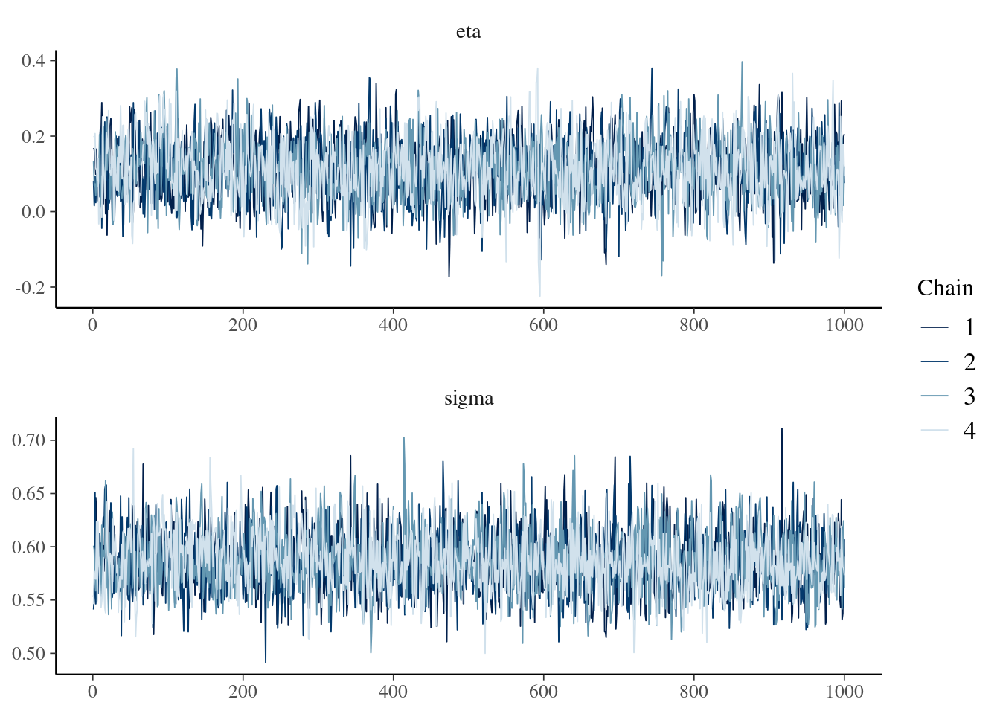
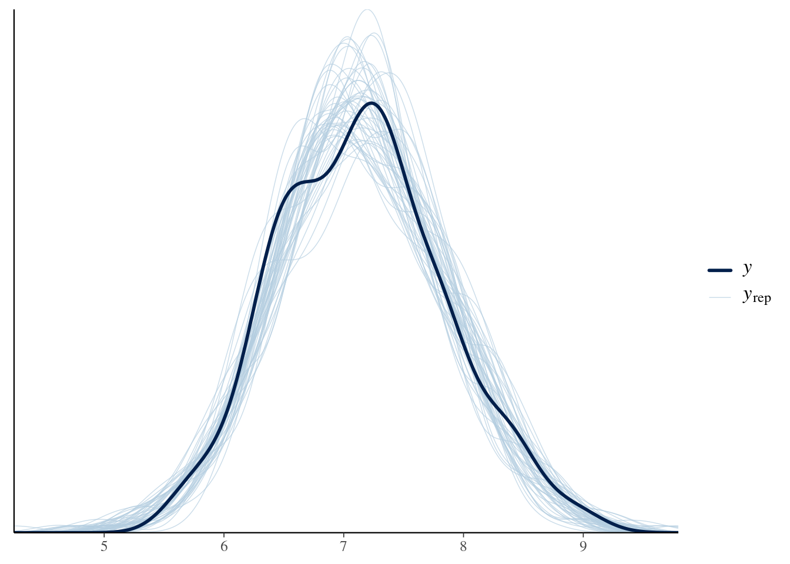

While Ordinary Least Squares (OLS) is a popular frequentist method for linear regression, the Bayesian approach is arguably better suited for informing business decisions.
OLS aims to find the line that minimizes the sum of squared differences between observed and predicted values. It treats model parameters as fixed but unknown quantities, estimating them by minimizing residuals. Inference relies on hypothesis testing and p-values to assess the significance of relationships. However, this approach can lead to a rigid focus on statistical significance rather than practical relevance.
A Bayesian Linear Model, while similar in structure to OLS, views parameters as random variables with probability distributions reflecting uncertainty. Prior distributions incorporate existing knowledge or assumptions, and Bayes’ theorem combines this prior information with observed data to estimate the posterior distribution of parameters. Inference focuses on posterior probabilities to quantify uncertainty and interpret the strength of evidence.
The Bayesian approach offers several advantages for business decision-making:
Incorporating Prior Knowledge: Bayesian models allow you to explicitly include prior knowledge or beliefs about the parameters, which can be valuable in business contexts where historical data or expert opinions exist.
Learning from New Data: The Bayesian framework naturally shows how new data updates and refines your understanding of the relationships between variables.
Thinking in Bets: Instead of relying on the binary and often arbitrary concept of statistical significance, Bayesian analysis encourages thinking in terms of probabilities and bets. This aligns well with business decisions, where you often need to weigh potential risks and rewards.
Practical Significance: While anything can be statistically significant with a large enough sample size, Bayesian analysis focuses on the magnitude and probability of effects that are practically meaningful for your business goals. Even if a result isn’t statistically significant, it could still be a good bet if the posterior probability of a meaningful impact is sufficiently high.
The Bayesian approach embraces the inherent uncertainty in data analysis, providing a richer and more nuanced understanding of the relationships between variables, ultimately leading to more informed and effective business decisions.
17.1 An example with synthetic data:
Imagine that you are faced with a decision: should you discontinue a product? You would like to keep the product if, and only if, its impact on your outcome of interest is at least 0.1. To help you make this decision, you’ve conducted a well-designed experiment. Let’s illustrate this with some synthetic data:
library(dplyr)set.seed(9782)N <-200fake_data <- tibble::tibble(x =rnorm(n = N, mean =0, sd =1),t =sample(x =c(T,F), size = N, replace = T, prob =c(0.5,0.5)),e =rnorm(n = N, mean =0, sd =0.4) ) %>%1mutate(y =7.1+0.6*x +0.02*t + e)
1
Note that the true impact is 0.02, suggesting that the correct decision would be to not discontinue the product. However, what happens if you analyze this data using a traditional frequentist approach?
Frequentist approach:
library(ggplot2)library(broom)lm1 <-lm(data = fake_data, formula = y ~ x + t) %>%tidy(., conf.int=T, conf.level=0.95) %>%filter(term=="tTRUE") plot <-ggplot(data = lm1, aes(y=estimate, x= term)) +geom_pointrange(aes(ymin = conf.low, ymax = conf.high)) +geom_hline(yintercept =0, linetype ="dotted", color ="blue") +scale_y_continuous(breaks =seq(-0.2, 0.2, by =0.02)) +theme_bw(base_size =18) +xlab("") +ylab("Impact") +theme(axis.text.x =element_blank(),axis.ticks.x =element_blank())plot
In this case, the point estimate is 0.08, the p-value 0.17 is greater than 0.05, and the 95% confidence interval ranges from -0.04 to 0.19. How would a decision-maker typically use this information? Unfortunately, many might decide to discontinue the product, misinterpreting the results (see Chandler et al. 2020).
ImportantThe null ritual, Gigerenzer, Krauss, and Vitouch (2004):
Set up a statistical null hypothesis of “no mean difference” or “zero correlation.” Don’t specify the predictions of your research hypothesis or of any alternative substantive hypotheses.
Use 5% as a convention for rejecting the null. If significant, accept your research hypothesis.
Always performing this procedure.
This problem was so widespread that in 2016, the American Statistical Association issued a statement cautioning against this practice (see Wasserstein and Lazar 2016). Confidence intervals are also frequently misinterpreted (see Hoekstra et al. 2014).
ImportantIncorrect interpretations:
The probability that the true mean is greater than 0 is at least 95%.
The probability that the true mean equals 0 is smaller than 5%.
The “null hypothesis” that the true mean equals 0 is likely to be incorrect.
There is a 95% probability that the true mean lies between -0.04 and 0.19.
We can be 95% confident that the true mean lies between -0.04 and 0.19.
If we were to repeat the experiment over and over, then 95% of the time the true mean falls between 0.1 and 0.19.
TipCorrect interpretations:
A particular procedure, when used repeatedly across a series of hyptothetical data sets, yields intervals that contain the true parameter value 95% of the cases. The key is that the CIs do not provide a statement about the parameter as it relates to the particular sample at hand.
This example starkly illustrates the disconnect between what decision-makers want to say and what a frequentist approach allows them to say. The good news? Bayesian methods offer a way to answer business questions directly and in plain language.
Bayesian approach:
The Bayesian approach to linear regression fundamentally shifts how we interpret and utilize data in decision-making. Rather than relying on point estimates and p-values, it focuses on understanding the probability distributions of parameters, providing a richer, more nuanced picture.
In a Bayesian Linear Model, parameters are viewed as random variables with their own probability distributions. This perspective allows us to incorporate prior knowledge into the model: prior distributions reflect existing knowledge or beliefs about parameters before observing the current data, which can be based on historical data, expert opinions, or theoretical considerations. The likelihood represents the probability of the observed data given the parameters, similar to the frequentist approach. Posterior distributions combine the prior distribution and the likelihood using Bayes’ theorem, reflecting updated beliefs about the parameters after observing the data. The beauty of the Bayesian approach lies in its flexibility and adaptability. As new data becomes available, the posterior distribution from one analysis can serve as the prior for the next, continually refining our understanding.
Business decisions often leverage historical data and expert judgment, and Bayesian models explicitly incorporate this information, leading to more informed and credible inferences. Bayesian analysis naturally adapts to new information. As fresh data is collected, the model updates its estimates, providing a dynamic and current understanding of the business environment. Instead of fixating on binary outcomes (significant vs. non-significant), Bayesian analysis assesses probabilities, aligning perfectly with the real-world decision-making process, which is inherently probabilistic and involves weighing risks and rewards. Bayesian models emphasize the magnitude and probability of effects that matter in practice. This focus is crucial in business, where even small but reliable improvements can have substantial impacts.
The {imt} package fits a Bayesian linear model using weakly informative priors for the covariates and allows the user to set more informative priors for the impact of the intervention. If \(y\) is the outcome of interest, the model is specified as follows:
\[
\begin{aligned}
y & \sim N(\mu, \sigma) \\
\mu &= \alpha + X^\star\beta + \color{red}{\eta} t
\end{aligned}
\]
Notice that if you have better priors, you should use them. To use this simple model, you just need to run the following code:
library(imt)fitted_blm <- blm$new(y ="y", x =c("x"),treatment ="t", data = fake_data, eta_mean =0,eta_sd =0.5)
It is always a good idea to look at the traceplot. A traceplot is a diagnostic tool used to visualize the “path” that a Markov Chain Monte Carlo (MCMC) sampler takes as it explores the parameter space. It helps assess the convergence and mixing of the chains, which is crucial for ensuring reliable inference from the model.
fitted_blm$tracePlot()

Assessing Convergence:
A well-converged chain should exhibit a “hairy caterpillar” pattern, where the trace fluctuates around a stable value without any trends or drifts. This indicates that the sampler has adequately explored the parameter space and reached a stationary distribution.
Conversely, non-converging chains might show trends, jumps, or slow mixing, suggesting that the sampler is stuck in a local region or hasn’t adequately explored the posterior distribution. Inferences drawn from such chains can be unreliable and misleading.
Diagnosing Mixing:
Good mixing implies that the chains effectively explore the entire parameter space and don’t get stuck in local regions. This is visually represented by well-intertwined lines from different chains on the traceplot.
Poorly mixed chains show distinct separation among lines, indicating they haven’t adequately explored the entire posterior distribution. This can lead to biased and inaccurate estimates of the parameters and their uncertainty.
Identifying Issues:
Traceplots can reveal potential issues in the model specification, priors, or MCMC settings. For example, highly correlated parameters might exhibit synchronized movement in the traceplot, suggesting a dependence relationship that needs further investigation.
Overall, examining traceplots is a valuable diagnostic step in Bayesian statistical analysis. They provide valuable insights into the convergence and mixing of MCMC chains, aiding in the valid and reliable interpretation of the model results.
It is prudent to verify that our model’s data generating process is compatible with the data used to fit the model. To do this, we can compare the kernel density of draws from the posterior distribution to the density of our data.
fitted_blm$ppcDensOverlay(n =50)

The next step is to use the fitted Bayesian model to answer our business question directly. In this example, we want to determine the likelihood that the product’s impact is at least \(0.01\). We can calculate this probability with a single line of code:
fitted_blm$posteriorProb(threshold =0.01)
Given the data, we estimate that the probability that the effect is more than 0.01 is 88%.
With this information, we can make a much more informed decision about whether to keep the product than if we were merely assessing the rejection of a null hypothesis. Moreover, we may care about multiple thresholds for this decision. For instance, if the impact exceeds \(0.2\), we might consider doubling our investment.
The {imt} package enables the creation of interactive visualizations that effectively demonstrate our data insights and summarize the risks associated with various decisions.
The plot generated by this code not only answers our business question directly but also illustrates how much we have learned from the data and how our initial priors have evolved. This comprehensive view is crucial for making better business decisions.
Bayesian analysis provides probabilities directly aligned with decision-making needs. For example, if the probability that the product’s impact exceeds \(0.01\) is low, we can confidently discontinue it. Conversely, if there’s a reasonable probability of a positive impact, we might decide to retain the product, potentially conducting further investigations or collecting more data.
In conclusion, the Bayesian approach offers a powerful, flexible, and intuitive framework for business decision-making. By focusing on probabilities and incorporating prior knowledge, it provides a clearer and more practical basis for making informed decisions in an uncertain world. This methodology enhances our ability to navigate uncertainty, ultimately leading to more effective and strategic business outcomes.
Chandler, Jesse J, Ignacio Martinez, Mariel M Finucane, Jeffrey G Terziev, and Alexandra M Resch. 2020. “Speaking on Data’s Behalf: What Researchers Say and How Audiences Choose.”Evaluation Review 44 (4): 325–53.
Gigerenzer, Gerd, Stefan Krauss, and Oliver Vitouch. 2004. “The Null Ritual.”The Sage Handbook of Quantitative Methodology for the Social Sciences, 391–408.
Hoekstra, Rink, Richard D Morey, Jeffrey N Rouder, and Eric-Jan Wagenmakers. 2014. “Robust Misinterpretation of Confidence Intervals.”Psychonomic Bulletin & Review 21: 1157–64. https://doi.org/10.3758/s13423-013-0572-3.
---title: "Bayesian Linear Regression"share: permalink: "https://book.martinez.fyi/blm.html" description: "Business Data Science: What Does it Mean to Be Data-Driven?" linkedin: true email: true mastodon: true---While Ordinary Least Squares (OLS) is a popular frequentist method for linearregression, the Bayesian approach is arguably better suited for informingbusiness decisions.OLS aims to find the line that minimizes the sum of squared differences betweenobserved and predicted values. It treats model parameters as fixed but unknownquantities, estimating them by minimizing residuals. Inference relies onhypothesis testing and p-values to assess the significance of relationships.However, this approach can lead to a rigid focus on statistical significancerather than practical relevance.A Bayesian Linear Model, while similar in structure to OLS, views parameters asrandom variables with probability distributions reflecting uncertainty. Priordistributions incorporate existing knowledge or assumptions, and Bayes' theoremcombines this prior information with observed data to estimate the posteriordistribution of parameters. Inference focuses on posterior probabilities toquantify uncertainty and interpret the strength of evidence.The Bayesian approach offers several advantages for business decision-making: - **Incorporating Prior Knowledge:** Bayesian models allow you to explicitly include prior knowledge or beliefs about the parameters, which can be valuable in business contexts where historical data or expert opinions exist. - **Learning from New Data:** The Bayesian framework naturally shows how new data updates and refines your understanding of the relationships between variables. - **Thinking in Bets:** Instead of relying on the binary and often arbitrary concept of statistical significance, Bayesian analysis encourages thinking in terms of probabilities and bets. This aligns well with business decisions, where you often need to weigh potential risks and rewards. - **Practical Significance:** While anything can be statistically significant with a large enough sample size, Bayesian analysis focuses on the magnitude and probability of effects that are practically meaningful for your business goals. Even if a result isn't statistically significant, it could still be a good bet if the posterior probability of a meaningful impact is sufficiently high.The Bayesian approach embraces the inherent uncertainty in data analysis,providing a richer and more nuanced understanding of the relationships betweenvariables, ultimately leading to more informed and effective business decisions.## An example with synthetic data: Imagine that you are faced with a decision: should you discontinue a product?You would like to keep the product if, and only if, its impact on your outcomeof interest is at least 0.1. To help you make this decision, you've conducted awell-designed experiment. Let's illustrate this with some synthetic data:```{r fake_data, message=FALSE}library(dplyr)set.seed(9782)N <-200fake_data <- tibble::tibble(x =rnorm(n = N, mean =0, sd =1),t =sample(x =c(T,F), size = N, replace = T, prob =c(0.5,0.5)),e =rnorm(n = N, mean =0, sd =0.4) ) %>%mutate(y =7.1+0.6*x +0.02*t + e) # <1>```1. Note that the true impact is 0.02, suggesting that the correct decision would be to not discontinue the product. However, what happens if you analyze this data using a traditional frequentist approach?### Frequentist approach: ```{r OLS}library(ggplot2)library(broom)lm1 <-lm(data = fake_data, formula = y ~ x + t) %>%tidy(., conf.int=T, conf.level=0.95) %>%filter(term=="tTRUE") plot <-ggplot(data = lm1, aes(y=estimate, x= term)) +geom_pointrange(aes(ymin = conf.low, ymax = conf.high)) +geom_hline(yintercept =0, linetype ="dotted", color ="blue") +scale_y_continuous(breaks =seq(-0.2, 0.2, by =0.02)) +theme_bw(base_size =18) +xlab("") +ylab("Impact") +theme(axis.text.x =element_blank(),axis.ticks.x =element_blank())plot```In this case, the point estimate is `r round(lm1$estimate, 2)`, the p-value`r round(lm1$p.value,2)` is greater than 0.05, and the 95% confidence intervalranges from `r round(lm1$conf.low,2)` to `r round(lm1$conf.high,2)`. How would adecision-maker typically use this information? Unfortunately, many might decideto discontinue the product, misinterpreting the results [see@chandler2020speaking].::: {.callout-important title="The null ritual, @gigerenzer2004null:"}1. Set up a statistical null hypothesis of "no mean difference" or "zero correlation." Don't specify the predictions of your research hypothesis or of any alternative substantive hypotheses.2. Use 5% as a convention for rejecting the null. If significant, accept your research hypothesis.3. Always performing this procedure.:::This problem was so widespread that in 2016, the American StatisticalAssociation issued a statement cautioning against this practice [see@wasserstein2016asa]. Confidence intervals are also frequently misinterpreted[see @hoekstra2014robust].::: {.callout-important title="Incorrect interpretations:"}1. The probability that the true mean is greater than 0 is at least 95%.2. The probability that the true mean equals 0 is smaller than 5%.3. The “null hypothesis” that the true mean equals 0 is likely to be incorrect.4. There is a 95% probability that the true mean lies between`r round(lm1$conf.low,2)` and `r round(lm1$conf.high,2)`.5. We can be 95% confident that the true mean lies between`r round(lm1$conf.low,2)` and `r round(lm1$conf.high,2)`.6. If we were to repeat the experiment over and over, then 95% of the time the true mean falls between 0.1 and `r round(lm1$conf.high,2)`.:::::: {.callout-tip title="Correct interpretations:"}A particular procedure, when used repeatedly across a series of hyptotheticaldata sets, yields intervals that contain the true parameter value 95% of thecases. The key is that the CIs do not provide a statement about the parameter asit relates to the particular sample at hand.:::This example starkly illustrates the disconnect between what decision-makerswant to say and what a frequentist approach allows them to say. The good news?Bayesian methods offer a way to answer business questions directly and in plainlanguage.### Bayesian approach: The Bayesian approach to linear regression fundamentally shifts how we interpretand utilize data in decision-making. Rather than relying on point estimates andp-values, it focuses on understanding the probability distributions ofparameters, providing a richer, more nuanced picture.In a Bayesian Linear Model, parameters are viewed as random variables with theirown probability distributions. This perspective allows us to incorporate priorknowledge into the model: prior distributions reflect existing knowledge orbeliefs about parameters before observing the current data, which can be basedon historical data, expert opinions, or theoretical considerations. Thelikelihood represents the probability of the observed data given the parameters,similar to the frequentist approach. Posterior distributions combine the priordistribution and the likelihood using Bayes' theorem, reflecting updated beliefsabout the parameters after observing the data. The beauty of the Bayesianapproach lies in its flexibility and adaptability. As new data becomesavailable, the posterior distribution from one analysis can serve as the priorfor the next, continually refining our understanding.Business decisions often leverage historical data and expert judgment, andBayesian models explicitly incorporate this information, leading to moreinformed and credible inferences. Bayesian analysis naturally adapts to newinformation. As fresh data is collected, the model updates its estimates,providing a dynamic and current understanding of the business environment.Instead of fixating on binary outcomes (significant vs. non-significant),Bayesian analysis assesses probabilities, aligning perfectly with the real-worlddecision-making process, which is inherently probabilistic and involves weighingrisks and rewards. Bayesian models emphasize the magnitude and probability ofeffects that matter in practice. This focus is crucial in business, where evensmall but reliable improvements can have substantial impacts.The {imt} package fits a Bayesian linear model using [weakly informativepriors](https://github.com/stan-dev/stan/wiki/Prior-Choice-Recommendations) forthe covariates and allows the user to set more informative priors for the impactof the intervention. If $y$ is the outcome of interest, the model is specifiedas follows:$$\begin{aligned}y & \sim N(\mu, \sigma) \\\mu &= \alpha + X^\star\beta + \color{red}{\eta} t\end{aligned}$$We standardize the data as follows:$$\begin{aligned}y^\star & = \frac{y - \mu_y}{\sigma_y} \\ & \sim N(\mu^\star, \sigma^\star) \\\mu^\star & = \alpha^\star + \frac{X - \mu_X}{\sigma_X} \beta^\star + \eta^\star t \\ \alpha^\star & \sim N(0,1) \\ \beta^\star & \sim N(0,1) \\ \color{red}{\eta^\star} & \color{red}{\sim N(\mu_\eta, \sigma_\eta)} \\ \sigma^\star & \sim N^+(0,1) \\\end{aligned}$$Therefore$$\begin{aligned}\frac{y - \mu_y}{\sigma_y} & = \alpha^\star +\frac{X - \mu_X}{\sigma_X} \beta^\star + \eta^\star t \\y & = (\alpha^\star +\frac{X - \mu_X}{\sigma_X} \beta^\star + \eta^\star t) \sigma_y + \mu_y \\\color{red}\eta = \eta^\star \sigma_y\end{aligned}$$Notice that if you have better priors, you should use them. To use this simplemodel, you just need to run the following code:```{r blm, message=FALSE, results = "hide"}library(imt)fitted_blm <- blm$new(y ="y", x =c("x"),treatment ="t", data = fake_data, eta_mean =0,eta_sd =0.5)```It is always a good idea to look at the traceplot. A traceplot is a diagnostic tool used to visualize the "path" that a Markov Chain Monte Carlo (MCMC) sampler takes as it explores the parameter space. It helps assess the convergence and mixing of the chains, which is crucial for ensuring reliable inference from the model.```{r tracePlot}fitted_blm$tracePlot()```1. **Assessing Convergence:**A well-converged chain should exhibit a "hairy caterpillar" pattern, where the trace fluctuates around a stable value without any trends or drifts. This indicates that the sampler has adequately explored the parameter space and reached a stationary distribution.Conversely, non-converging chains might show trends, jumps, or slow mixing, suggesting that the sampler is stuck in a local region or hasn't adequately explored the posterior distribution. Inferences drawn from such chains can be unreliable and misleading.2. **Diagnosing Mixing:**Good mixing implies that the chains effectively explore the entire parameter space and don't get stuck in local regions. This is visually represented by well-intertwined lines from different chains on the traceplot.Poorly mixed chains show distinct separation among lines, indicating they haven't adequately explored the entire posterior distribution. This can lead to biased and inaccurate estimates of the parameters and their uncertainty.3. **Identifying Issues:**Traceplots can reveal potential issues in the model specification, priors, or MCMC settings. For example, highly correlated parameters might exhibit synchronized movement in the traceplot, suggesting a dependence relationship that needs further investigation.Overall, examining traceplots is a valuable diagnostic step in Bayesian statistical analysis. They provide valuable insights into the convergence and mixing of MCMC chains, aiding in the valid and reliable interpretation of the model results.It is prudent to verify that our model's data generating process is compatible with the data used to fit the model. To do this, we can compare the kernel density of draws from the posterior distribution to the density of our data.```{r ppcDensOverlay}fitted_blm$ppcDensOverlay(n =50)```The next step is to use the fitted Bayesian model to answer our businessquestion directly. In this example, we want to determine the likelihood that theproduct's impact is at least $0.01$. We can calculate this probability with asingle line of code:```{r posterior}fitted_blm$posteriorProb(threshold =0.01)```With this information, we can make a much more informed decision about whetherto keep the product than if we were merely assessing the rejection of a nullhypothesis. Moreover, we may care about multiple thresholds for this decision.For instance, if the impact exceeds $0.2$, we might consider doubling ourinvestment. ::: {.content-visible when-format="html"}The {imt} package enables the creation of interactive visualizations thateffectively demonstrate our data insights and summarize the risks associatedwith various decisions.```{r}#| eval: !expr knitr::is_html_output()fitted_blm$vizdraws(breaks =c(0.01, 0.2),break_names =c("Discontinue", "Keep", "Double down"),display_mode_name =TRUE)```The plot generated by this code not only answers our business question directlybut also illustrates how much we have learned from the data and how our initialpriors have evolved. This comprehensive view is crucial for making betterbusiness decisions.:::Bayesian analysis provides probabilities directly aligned with decision-makingneeds. For example, if the probability that the product's impact exceeds $0.01$is low, we can confidently discontinue it. Conversely, if there's a reasonableprobability of a positive impact, we might decide to retain the product,potentially conducting further investigations or collecting more data.In conclusion, the Bayesian approach offers a powerful, flexible, and intuitiveframework for business decision-making. By focusing on probabilities andincorporating prior knowledge, it provides a clearer and more practical basisfor making informed decisions in an uncertain world. This methodology enhancesour ability to navigate uncertainty, ultimately leading to more effective andstrategic business outcomes.